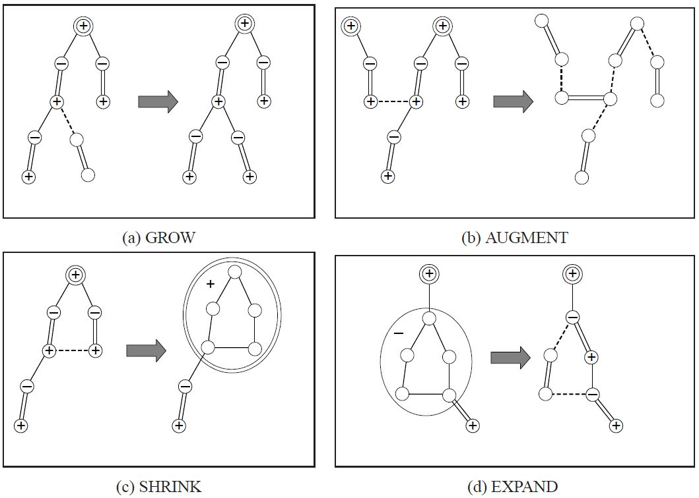
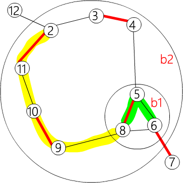

Cặp ghép cực đại trọng số đồ thị thường
本页从一般图最大权完美匹配到一般图最大权匹配（最大权匹配可以通过增加零边变成最大权完美匹配）．
预备知识
花（blossom）
一般图匹配和二分图匹配不同的是，图可能存在奇环．可以将偶环视为二分图．
带花树算法（Blossom Algorithm）的处理方式时是遇到奇环就把它缩成一个 花（Blossom） ，并把花中所有的点设为偶点．既然花上的点都可以成为偶点，那么可以把整个花直接缩成一个偶点．注意，一个花可以包含其它花．
这也可以变成线性规划和对偶问题，但是要对花进行一些处理．
顶标（vertex labeling）和等边（Equality Edge）
定义 \(z_u\) 是点 \(u\) 的顶标（vertex labeling），与 \(KM\) 算法中定义的顶标含义相同．定义边 \(e(u,v)\) 为 "等边" 当且仅当点 \(u\) 和点 \(v\) 的标号和等于边 \(e\) 的权值（\(z_u + z_v = w(e)\) ），此时边的标号 \(z_e = z_u + z_v − w(e) = 0\) ．
一般图最大权完美匹配的线性规划
定义
因为一朵花最少有三个点，缩花后成为一个点．设 \(O\) 为大小为 \(≥3\) 奇数的集合的集合（包含所有花），\(\gamma(S)\) 表示 \(S\) 集合中的边．
\[
\begin{aligned}
& \text{设} S\subseteq V \\
& \gamma(S)=\{(u,v)\in E:u\in S,v\in S\} \\
& O=\{B\subseteq V:|B|\text{是奇数且}|B|\geq3\} \\
\end{aligned}
\]
对偶问题
原问题
\[
\begin{aligned}
& \max\sum_{e\in E}w(e)x_e \\
& \text{限制：} \\
& x(\delta(u))=1:\forall u\in V \\
& x(\gamma(B))\leq\lfloor\frac{|B|}{2}\rfloor:\forall B\in O \\
& x_e\geq0:\forall e\in E \\
\end{aligned}
\]
然后通过原始对偶（Primal-Dual）将问题转换为对偶问题．
对偶问题
\[
\begin{aligned}
& \min\sum_{u\in V}z_u+\sum_{B\in O}\left\lfloor\frac{|B|}{2}\right\rfloor z_B \\
& \text{限制：} \\
& z_B\geq0:\forall B\in O \\
& z_e\geq0:\forall e\in E \\
& \text{设} e=(u,v)，\text{这里} \\
& \begin{array}{lll}
z_e & = & z_u + z_v - w(e) + \sum_{\substack{B \in O \\ u,v \in \gamma(B)}} z_B
\end{array}
\end{aligned}
\]
\(x_e=1\) 的边是匹配边，\(x_e=0\) 的边是非匹配边．和二分图一样，我们必须满足 \(x_e\in\{0,1\}:\forall e\in E\) ．因此必须在最大权完美匹配的时候，让所有匹配边都是 等边 的．
和二分图不同的是，一般图多了 \(z_B\) 要处理．下面考虑 \(z_B\) 什么时候大于 \(0\) ．
可以看出，尽量使 \(z_B=0\) 是最好的做法，但在不得已时还是要让 \(z_B>0\) ．在 \(x(\gamma(B)) = \left\lfloor \dfrac{|B|}2 \right\rfloor \text{且} x(\delta(B)) = 1\) 时，让 \(z_B>0\) 即可．因为除了在这种情况下，\(z_B>0\) 是无意义的．
根据互补松弛条件，有以下的对应关系：
对于选中的边 \(e\) ，必有 \(z_e=0\) ．
\[
x_e>0 \longrightarrow z_e=0,\quad \forall e\in E
\]
对于选中的集合B ，\(z_B>0 \longrightarrow x(\gamma(B))= \left\lfloor \dfrac{|B|}2 \right\rfloor\) ，即所有 \(z_B>0\) 的集合 \(B\) ，都被选了集合大小一半的边，也即集合 \(B\) 是一朵花，选中花中的一条边进行增广．同时，我们加入一个条件：\(x(\delta(B))=1\) ，即只有花 \(B\) 向外连了一条边的时候，\(z_B>0\) 才是有意义的．
\[
z_B>0 \longrightarrow x(\gamma(B))=\left\lfloor\frac{|B|}2\right\rfloor, x(\delta(B))=1\quad \forall B\in O
\]
以「等边 」的概念，结合之前的带花树算法：用「等边」构成的增广路不断进行扩充，由于用来扩充的边全是「等边」，最后得到的最大权完美匹配仍然全是「等边」．
处理花的问题
当遇到花的时候，要将它缩成一个偶点．将花中所有点都设为偶点，并让它的 \(z_B=0\) ．
由于缩花后会把花保存起来，直到满足某些条件才会拆开，所以不能用之前的方法记录花．
如果没有特殊说明，之前提到的点，都包含缩花形成的偶点．
由于花也有可能缩成点被加入队列中，并且花的数量是不固定的，因此不能像之前一样枚举每个点来检查是否有增广路．因此，在进行广度优先搜索（BFS）时，必须将所有未匹配的点都放入队列中．
这样会同时产生很多棵交错树．
算法的四个步骤
这个算法可以分成四个步骤．
GROW（等边）：用 "等边" 构成交错树．
AUGMENT（增广）：找出增广路并扩充匹配．
SHRINK（缩花）：把花缩成一个点．
EXPAND（展开）：把花拆开．

在 AUGMENT 阶段时，因为所有未匹配点都会在不同的交错树上，所以当增广时两棵交错树的偶点连在一起，就表示找到了一条增广路．
找不到等边扩充
和二分图一样，也会有找不到「等边」扩充的问题．这时就需要调整 vertex labeling．
调整 VERTEX LABELING
vertex labeling 仍要维持大于等于的性质，而且既有的「等边」不能被改变，还要让 \(z_B\) 尽量的小．
定义符号 奇偶点
以 \(u^−\) 来表示 \(u\) 在交错树上为奇点．\(u^+\) 来表示 \(u\) 在交错树上为偶点．\(u^\varnothing\) 来表示 \(u\) 不在任何一棵交错树上．\(B\) 预设都是花，并同时代表缩花之后的点．\(B^+\) 、\(B^−\) 、\(B^\varnothing\) 等符号．
设目前有 r 棵交错树 \(T_i=(U_{t_i},V_{t_i}):1\leq i\leq r\) ，令
\[
\begin{aligned}
d1 &= \min(\{z_e : e = (u^+,v^\varnothing)\}) \\
d2 &= \min(\{z_e : e = (u^+,v^+), ~ u^+ \in T_i, ~ v^+ \in T_j, ~ i \neq j\}) / 2 \\
d3 &= \min(\{z_{B^-} : B^- \in O\}) / 2
\end{aligned}
\]
注意这里B 是缩花之后的点，所以可以有奇偶性．
设 \(d=min(d1,d2,d3)\) ，让
\[
\begin{aligned}
z_{u^+} - &= d \\
z_{v^-} + &= d \\
z_{B^+} + &= 2d \\
z_{B^-} - &= 2d \\
\end{aligned}
\]
如果出现 \(z_B=0(d=d3)\) ，为了防止 \(z_B<0\) 的情况，所以要把这朵花拆了 (EXPAND)．
拆花后只留下花里的交替路径，并把花里不在交替路径上的点设为未走访 (\(\varnothing\) )．
如此便制造了一条（以上）的等边，既有等边保持不动，并维持了 \(z_e\geq0:\forall e\in E\) 的性质，且最低限度增加了 \(z_B\) ，可以继续找增广路了．
一般图最大权匹配
以上求的是最大权完美匹配，求最大权匹配需要在 vertex labeling 额外增加一个限制：对于所有匹配点 \(u\) ，\(z_u>0\) ．
开始时先设所有的 \(z_u=max(\{w(e):e\in E\})/2\) ．
vertex labeling 为 \(0\) 的点最后将成为未匹配点．
参考代码
这里为了方便实现，使用边权乘 \(2\) 来计算 \(z_e\) 的值，这样就不会出现浮点数误差了．
存储
1
2
3
4
5
6
7
8
9
10
11
12
13
14
15
16
17
18
19
20 constexpr int INF = INT_MAX ;
constexpr int MAXN = 400 ;
struct edge {
int u , v , w ;
// 表示(u,v)为一条边其权重为w
edge () {}
edge ( int u , int v , int w ) : u ( u ), v ( v ), w ( w ) {}
};
int n , n_x ;
// 有n个点，编号为 1 ~ n
// n_x表示当前点加上花的数量，编号从n+1到n_x为花的节点
edge g [ MAXN * 2 + 1 ][ MAXN * 2 + 1 ];
// 图用邻接矩阵存储，因为最多有n-1朵花，所以大小为MAXN*
vector < int > flower [ MAXN * 2 + 1 ];
// flower[b]记录了花b中有哪些点
// 我们记录花中的点的方式是只记录花里面的最外层花
下面是嵌套花的例子．

其中 \(\{ 6, 5, 8\} \in b1,\{ b1, 4, 3, 2, 11, 10, 9\} \in b2\) ．存储为：
flower[b2] = {b1, 4, 3, 2, 11, 10, 9}
flower[b1] = {6, 5, 8}
flower[b2] = {9, b1, 4, 3, 2, 11, 10}
flower[b1] = {5, 8, 6}
1
2
3
4
5
6
7
8
9
10
11
12
13
14
15
16
17 int lab [ MAXN * 2 + 1 ];
// lab[u]用来记录z_u, lab[b]用来记录z_B
int match [ MAXN * 2 + 1 ], slack [ MAXN * 2 + 1 ], st [ MAXN * 2 + 1 ],
pa [ MAXN * 2 + 1 ];
// match[x]=y表示(x,y)是匹配，这里x、y可能是花
// slack[x]=u表示z(x,u)是所有和x相邻的边中最小的那条边
// 表示节点 x 所在的花是 b．如果 x=b 且 b<=n，则表示 x
// 是一个普通节点（不属于任何花） 表示在交错树中，节点 v 的父节点是 u
int flower_from [ MAXN * 2 + 1 ][ MAXN + 1 ], S [ MAXN * 2 + 1 ], vis [ MAXN * 2 + 1 ];
/*
flower_from[b][x]=xs表示最大的包含x的b的子花是xs
x是b里面的一个点，xs是b里面的一朵花或一个点，同时x=xs或x是xs的其中一个点
*/
// S[u]={-1:没走过 0:偶点 1:奇点}
// vis只用在找lca的时候检查是不是走过了
queue < int > q ;
// BFS找增广路用的queue
flower_from[b2][6] = b1
flower_from[b2][5] = b1
flower_from[b2][9] = 9
flower_from[b1][6] = 6
以此类推
1
2
3
4
5
6
7
8
9
10
11
12
13
14
15
16
17
18
19
20
21
22 int e_delta ( const edge & e ) {
// 计算ze，为了方便起见先把所有边的权重乘二
// 在花里面直接计算 e_delta 值会导致错误
return lab [ e . u ] + lab [ e . v ] - g [ e . u ][ e . v ]. w * 2 ;
}
void update_slack ( int u , int x ) {
// 以u更新slack[x]的值
if ( ! slack [ x ] || e_delta ( g [ u ][ x ]) < e_delta ( g [ slack [ x ]][ x ])) {
slack [ x ] = u ;
}
}
void set_slack ( int x ) {
// 算出slack[x]的值，slack[x]=0表示x是交错树中的节点
slack [ x ] = 0 ;
for ( int u = 1 ; u <= n ; ++ u ) {
if ( g [ u ][ x ]. w > 0 && st [ u ] != x && S [ st [ u ]] == 0 ) {
update_slack ( u , x );
}
}
}
1
2
3
4
5
6
7
8
9
10
11
12
13
14
15
16
17
18
19
20
21
22 void q_push ( int x ) {
// 把x丟到queue里面，我们设定queue不能直接push一朵花
if ( x <= n )
q . push ( x );
else {
// 若要push花必须将花里面原图的点都添加到queue中
for ( size_t i = 0 ; i < flower [ x ]. size (); i ++ ) {
q_push ( flower [ x ][ i ]);
}
}
}
void set_st ( int x , int b ) {
// 将x所在的花设为b
st [ x ] = b ;
if ( x > n ) {
// 若x也是花的话，就必须要把x里面的点其所在的花也设为b
for ( size_t i = 0 ; i < flower [ x ]. size (); ++ i ) {
set_st ( flower [ x ][ i ], b );
}
}
}
1
2
3
4
5
6
7
8
9
10
11
12
13 int get_pr ( int b , int xr ) {
// xr是flower[b]中的一个点，返回值pr是它的位置
// 为了方便程序运行，我们让 flower[b][0]~flower[b][pr]为花里的交替路
int pr = find ( flower [ b ]. begin (), flower [ b ]. end (), xr ) - flower [ b ]. begin ();
if ( pr % 2 == 1 ) {
// 检查他在花里的位置，如果 flower[b][0]~flower[b][pr] 不是交替路
// 就把整朵花反转，重新计算 pr
// 让 flower[b][0]~flower[b][pr] 为花里的交替路
reverse ( flower [ b ]. begin () + 1 , flower [ b ]. end ());
return ( int ) flower [ b ]. size () - pr ;
} else
return pr ;
}
如果使用 get_pr(b2,11)，flower[b2] 会变成 {9,10,11,2,3,4,b1}，并返回 2．
如果使用 get_pr(b2,2)，flower[b2] 会变成 {9,b1,4,3,2,11,10}，并返回 4．
1
2
3
4
5
6
7
8
9
10
11
12
13
14
15
16
17
18
19
20
21
22
23
24
25
26
27
28
29
30
31
32
33
34
35
36
37
38
39
40
41
42 void set_match ( int u , int v ) {
// 设置u和v为匹配边，u和v有可能是花
match [ u ] = g [ u ][ v ]. v ;
if ( u > n ) {
// 如果u是花的话
edge e = g [ u ][ v ];
int xr = flower_from [ u ][ e . u ]; // 找出e.u在flower[u]里的哪朵花上
int pr = get_pr ( u , xr ); // 找出xr的位置并让0~pr为花里的交替路径
for ( int i = 0 ; i < pr ; ++ i ) { // 把花里的交替路上的匹配边和非匹配边反转
set_match ( flower [ u ][ i ], flower [ u ][ i ^ 1 ]);
}
set_match ( xr , v ); // 设置(xr,v)为匹配边
rotate ( flower [ u ]. begin (), flower [ u ]. begin () + pr , flower [ u ]. end ());
// 最后把pr设为花托，因为花的存法是flower[u][0]会是u的花托
// 所以要把flower[u][pr] rotate 到最前面
}
}
void augment ( int u , int v ) {
// 把u和u的祖先全部增广，并设(u,v)为匹配边
for (;;) {
int xnv = st [ match [ u ]];
set_match ( u , v );
if ( ! xnv ) return ;
set_match ( xnv , st [ pa [ xnv ]]);
u = st [ pa [ xnv ]];
v = xnv ;
}
}
int get_lca ( int u , int v ) {
// 找出u,v在交错树上的lca
static int t = 0 ;
for ( ++ t ; u || v ; swap ( u , v )) {
if ( u == 0 ) continue ;
if ( vis [ u ] == t ) return u ;
vis [ u ] = t ; // 这种方法可以不用清空vis数组
u = st [ match [ u ]];
if ( u ) u = st [ pa [ u ]];
}
return 0 ;
}
增加一朵奇花
1
2
3
4
5
6
7
8
9
10
11
12
13
14
15
16
17
18
19
20
21
22
23
24
25
26
27
28
29
30
31
32
33
34
35
36
37
38
39
40
41
42
43
44
45
46
47
48
49
50
51
52
53
54 void add_blossom ( int u , int lca , int v ) {
// 将u,v,lca这朵花缩成一个点 b
// 交错树上u,v的lca即为花托
int b = n + 1 ;
while ( b <= n_x && st [ b ]) ++ b ;
if ( b > n_x ) ++ n_x ;
// 找出目前未使用的花的编号
lab [ b ] = 0 ; // 设置zB=0
S [ b ] = 0 ; // 整朵花为一个偶点
match [ b ] = match [ lca ]; // 设置花的匹配边为花托的匹配边
flower [ b ]. clear ();
flower [ b ]. push_back ( lca );
for ( int x = u , y ; x != lca ; x = st [ pa [ y ]]) {
flower [ b ]. push_back ( x );
y = st [ match [ x ]];
flower [ b ]. push_back ( y );
q_push ( y );
}
reverse ( flower [ b ]. begin () + 1 , flower [ b ]. end ());
for ( int x = v , y ; x != lca ; x = st [ pa [ y ]]) {
flower [ b ]. push_back ( x );
y = st [ match [ x ]];
flower [ b ]. push_back ( y );
q_push ( y );
}
// b中所有点以环形的方式加入flower[b]，并设花托为首个元素
set_st ( b , b ); // 把整朵花里所有的元素其所在的花设为b
for ( int x = 1 ; x <= n_x ; ++ x ) {
g [ b ][ x ]. w = 0 ;
g [ x ][ b ]. w = 0 ;
}
for ( int x = 1 ; x <= n ; ++ x ) {
flower_from [ b ][ x ] = 0 ;
}
for ( size_t i = 0 ; i < flower [ b ]. size (); ++ i ) {
int xs = flower [ b ][ i ];
for ( int x = 1 ; x <= n_x ; ++ x ) {
// 设置b和x相邻的边为b里面和x相邻的边e_delta最小的那条
if ( g [ b ][ x ]. w == 0 || e_delta ( g [ xs ][ x ]) < e_delta ( g [ b ][ x ])) {
g [ b ][ x ] = g [ xs ][ x ];
g [ x ][ b ] = g [ x ][ xs ];
}
}
for ( int x = 1 ; x <= n ; ++ x ) {
if ( flower_from [ xs ][ x ]) {
// 如果b里面的点xs有包含x
// 那flower_from[b][x]就会是xs
flower_from [ b ][ x ] = xs ;
}
}
}
set_slack ( b );
// 最后必须要设置b的slack值
}
拆花
1
2
3
4
5
6
7
8
9
10
11
12
13
14
15
16
17
18
19
20
21
22
23
24
25
26
27
28
29
30
31
32
33 void expand_blossom ( int b ) {
// b是奇花且zB=0时，必须要把b拆开
// 因为只拆开b而已，所以如果b里面有包含其他的花
// 不需要把他们拆开
for ( size_t i = 0 ; i < flower [ b ]. size (); ++ i ) {
set_st ( flower [ b ][ i ], flower [ b ][ i ]);
// 先把flower[b]里每个元素所在的花设为自己
}
int xr = flower_from [ b ][ g [ b ][ pa [ b ]]. u ];
// xr表示交错路上b的父母节点在flower[b]里的哪朵花上
int pr = get_pr ( b , xr ); // 找出xr的位置并让0~pr为花里的交替路径
for ( int i = 0 ; i < pr ; i += 2 ) {
// 把交替路径拆开到交错树中
// 并把交替路中的偶点丢到queue里
int xs = flower [ b ][ i ];
int xns = flower [ b ][ i + 1 ];
pa [ xs ] = g [ xns ][ xs ]. u ;
S [ xs ] = 1 ;
S [ xns ] = 0 ;
slack [ xs ] = 0 ;
set_slack ( xns );
q_push ( xns );
}
S [ xr ] = 1 ; // 这时xr会是奇点或奇花
pa [ xr ] = pa [ b ];
for ( size_t i = pr + 1 ; i < flower [ b ]. size (); ++ i ) {
// 把花中所有不再交替路径上的点设为未走访
int xs = flower [ b ][ i ];
S [ xs ] = -1 ;
set_slack ( xs );
}
st [ b ] = 0 ;
}
尝试增广一条等边
1
2
3
4
5
6
7
8
9
10
11
12
13
14
15
16
17
18
19
20
21
22
23
24
25
26
27 bool on_found_edge ( const edge & e ) {
// BFS时找到一条等边e
// 要对它进行以下的处理
// 这里u一定是偶点
int u = st [ e . u ], v = st [ e . v ];
if ( S [ v ] == -1 ) {
// v是未走访节点
pa [ v ] = e . u ;
S [ v ] = 1 ;
int nu = st [ match [ v ]];
slack [ v ] = 0 ;
slack [ nu ] = 0 ;
S [ nu ] = 0 ;
q_push ( nu );
} else if ( S [ v ] == 0 ) {
// v是偶点
int lca = get_lca ( u , v );
if ( ! lca ) { // lca=0表示u,v在不同的交错树上，有增广路
augment ( u , v );
augment ( v , u );
return true ; // 找到增广路
} else
add_blossom ( u , lca , v );
// 否则u,v在同棵树上就会是一朵花，要缩花
}
return false ;
}
增广
1
2
3
4
5
6
7
8
9
10
11
12
13
14
15
16
17
18
19
20
21
22
23
24
25
26
27
28
29
30
31
32
33
34
35
36
37
38
39
40
41
42
43
44
45
46
47
48
49
50
51
52
53
54
55
56
57
58
59
60
61
62
63
64
65
66
67
68
69
70
71
72
73
74
75 bool matching () {
memset ( S + 1 , -1 , sizeof ( int ) * n_x );
memset ( slack + 1 , 0 , sizeof ( int ) * n_x );
q = queue < int > (); // 把queue清空
for ( int x = 1 ; x <= n_x ; ++ x ) {
if ( st [ x ] == x && ! match [ x ]) {
// 把所有非匹配点加入queue里面，并设为偶点
pa [ x ] = 0 ;
S [ x ] = 0 ;
q_push ( x );
}
}
if ( q . empty ()) return false ; // 所有点都有匹配了
for (;;) {
while ( q . size ()) {
// BFS
int u = q . front ();
q . pop ();
if ( S [ st [ u ]] == 1 ) continue ;
for ( int v = 1 ; v <= n ; ++ v ) {
if ( g [ u ][ v ]. w > 0 && st [ u ] != st [ v ]) {
if ( e_delta ( g [ u ][ v ]) == 0 ) {
if ( on_found_edge ( g [ u ][ v ])) return true ;
} else
update_slack ( u , st [ v ]);
}
}
}
// 修改lab值
int d = INF ;
for ( int u = 1 ; u <= n ; ++ u ) {
// 这是为了防止出现lab<0的情况发生
// 只要有任何一个lab[u]=0就结束程序
if ( S [ st [ u ]] == 0 ) d = min ( d , lab [ u ]);
}
for ( int b = n + 1 ; b <= n_x ; ++ b ) {
if ( st [ b ] == b && S [ b ] == 1 ) d = min ( d , lab [ b ] / 2 );
}
for ( int x = 1 ; x <= n_x ; ++ x )
if ( st [ x ] == x && slack [ x ]) {
if ( S [ x ] == -1 )
d = min ( d , e_delta ( g [ slack [ x ]][ x ]));
else if ( S [ x ] == 0 )
d = min ( d , e_delta ( g [ slack [ x ]][ x ]) / 2 );
}
for ( int u = 1 ; u <= n ; ++ u ) {
if ( S [ st [ u ]] == 0 ) {
if ( lab [ u ] == d ) return false ;
// 如果lab[u]=0就直接结束程序
lab [ u ] -= d ;
} else if ( S [ st [ u ]] == 1 )
lab [ u ] += d ;
}
for ( int b = n + 1 ; b <= n_x ; ++ b ) {
if ( st [ b ] == b ) {
if ( S [ st [ b ]] == 0 )
lab [ b ] += d * 2 ;
else if ( S [ st [ b ]] == 1 )
lab [ b ] -= d * 2 ;
}
}
q = queue < int > (); // 把queue清空
for ( int x = 1 ; x <= n_x ; ++ x ) {
// 检查看看有没有增广路径产生
if ( st [ x ] == x && slack [ x ] && st [ slack [ x ]] != x &&
e_delta ( g [ slack [ x ]][ x ]) == 0 )
if ( on_found_edge ( g [ slack [ x ]][ x ])) return true ;
}
for ( int b = n + 1 ; b <= n_x ; ++ b ) {
// EXPAND的操作，把所有lab[b]=0的奇花拆开
if ( st [ b ] == b && S [ b ] == 1 && lab [ b ] == 0 ) expand_blossom ( b );
}
}
return false ;
}
主函数
1
2
3
4
5
6
7
8
9
10
11
12
13
14
15
16
17
18
19
20
21
22
23
24
25
26
27 pair < long long , int > weight_blossom () {
// 主函数，一开始先初始化
memset ( match + 1 , 0 , sizeof ( int ) * n );
n_x = n ; // 一开始没有花
int n_matches = 0 ;
long long tot_weight = 0 ;
for ( int u = 0 ; u <= n ; ++ u ) {
// 先把自己所在的花设为自己
st [ u ] = u ;
flower [ u ]. clear ();
}
int w_max = 0 ;
for ( int u = 1 ; u <= n ; ++ u )
for ( int v = 1 ; v <= n ; ++ v ) {
// u是一个点时，里面所包含的点只有自己
flower_from [ u ][ v ] = ( u == v ? u : 0 );
w_max = max ( w_max , g [ u ][ v ]. w );
// 找出最大的边权
}
for ( int u = 1 ; u <= n ; ++ u ) lab [ u ] = w_max ;
// 让所有的lab=最大的边权
// 因为这里实现是用边权乘二来计算ze的值所以不用除以二
while ( matching ()) ++ n_matches ;
for ( int u = 1 ; u <= n ; ++ u )
if ( match [ u ] && match [ u ] < u ) tot_weight += g [ u ][ match [ u ]]. w ;
return make_pair ( tot_weight , n_matches );
}
初始化
很重要 使用前一定要初始化
void init_weight_graph () {
// 在把边输入到图里面前必须要初始化
// 因为是最大权匹配所以把不存在的边设为0
for ( int u = 1 ; u <= n ; ++ u )
for ( int v = 1 ; v <= n ; ++ v ) g [ u ][ v ] = edge ( u , v , 0 );
}
复杂度分析
每朵花在一次 BFS 中只会被缩花或拆花一次．每次缩花或拆花的时间复杂度为 \(O(|V|)\) ．最多总共有 \(O(|V|)\) 朵花，所以花的处理花费 \(O(|V|^2)\) 的时间．而 BFS 花费 \(O(|V| + |E|)\) 的时间复杂度．因此，找增广路花费 \(O(|V| + |E|) + O(|V|^2) = O(|V|^2)\) 的时间复杂度．
最多做 \(|V|\) 次 BFS．所以，总时间复杂度为 \(O(|V|^3)\) ．
习题
参考资料
Kolmogorov, Vladimir (2009), "Blossom V: A new implementation of a minimum cost perfect matching algorithm" 从匈牙利算法到带权带花树——详解对偶问题在图匹配上的应用
Update history Edit this page on GitHub! accelsao, Henry-ZHR, yuhuoji CC BY-SA 4.0 and SATA